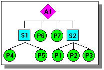

Changing assembly components
One of the advantages of building assemblies in Solid Edge is that you can change the design of a Solid Edge part or subassembly while working in the context of the assembly. For example, you can construct, edit, or delete features in a Solid Edge part document while viewing the other assembly components. You can also select and copy geometry in other documents to help you construct and modify the current part on which you are working.
When working with traditional parts and assemblies, you can edit a component, or you can open a component. Both methods are explained in more detail below. To change a part or subassembly in an assembly, first select the component you want to change in PathFinder or the graphics window, then right-click and choose the Edit or Open commands from the shortcut menu. The proper environment is activated so you can edit the component.
When working with parts and assemblies, there is also a subset of part component modifications you can perform while working in the assembly document itself. For more information, see Editing parts from the assembly.
The display of the remaining parts and subassemblies is changed to indicate that you are editing the part within the context of the assembly. You cannot edit multiple parts simultaneously from within the Assembly environment.
To return to the assembly and save the changes to memory, use the Close and Return command on the Home tab. To return to the assembly without saving your changes, use the Revert command on the File menu.
To save your changes to disk, choose the Save All command on the File menu.
Opening components
The Open command can be used on any component in your assembly. The Open command does not allow you to view the other components in the assembly while you modify the selected component.
Using the Open command is similar to accessing the part through the Windows Explorer.
You can use the Save command to save your changes before you close the document.
Nested assemblies
You can use the Edit command to open a part document from an assembly other than the parent assembly.
In the example below, if you are in assembly A1, you can open any part or subassembly nested below A1. When you close the part or subassembly, you are returned to assembly A1.

Updating the assembly after design modification
When you change the design of a part in an assembly, the changes are automatically reflected in the assembly if the Tools tab→Update group→Update Active Level button→Automatic Update command is set. If the Automatic Update command is cleared, you can do one of the following to see the design changes:
-
Select the Automatic Update command.
-
Use the Update command.
-
Use the Update All Links command.
How do I
Hide the remaining parts in an assemblyCreate a new part within an assembly
Create an assembly with the Create Assembly command
Close an in-place activated document
Close a part without saving changes
Look up more details
Revert commandHide Previous Level command
Assembly of Active Model command
Create Part In-Place command
Create Part in Place command bar
Create Assembly dialog box
Create Part In-Place Options dialog box
Close and Return command
Create New Subassembly Dialog Box